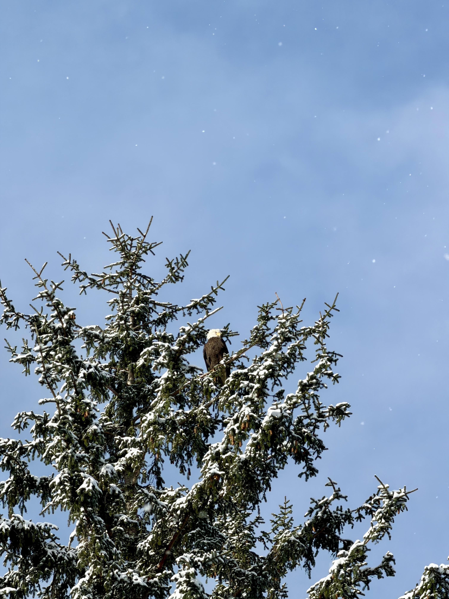
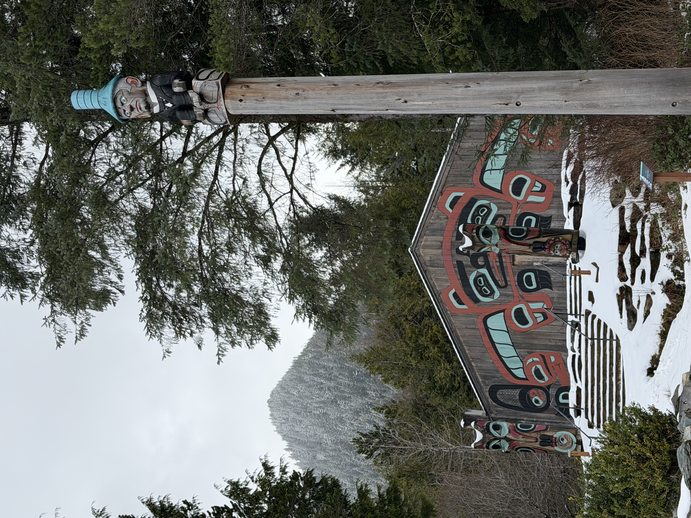
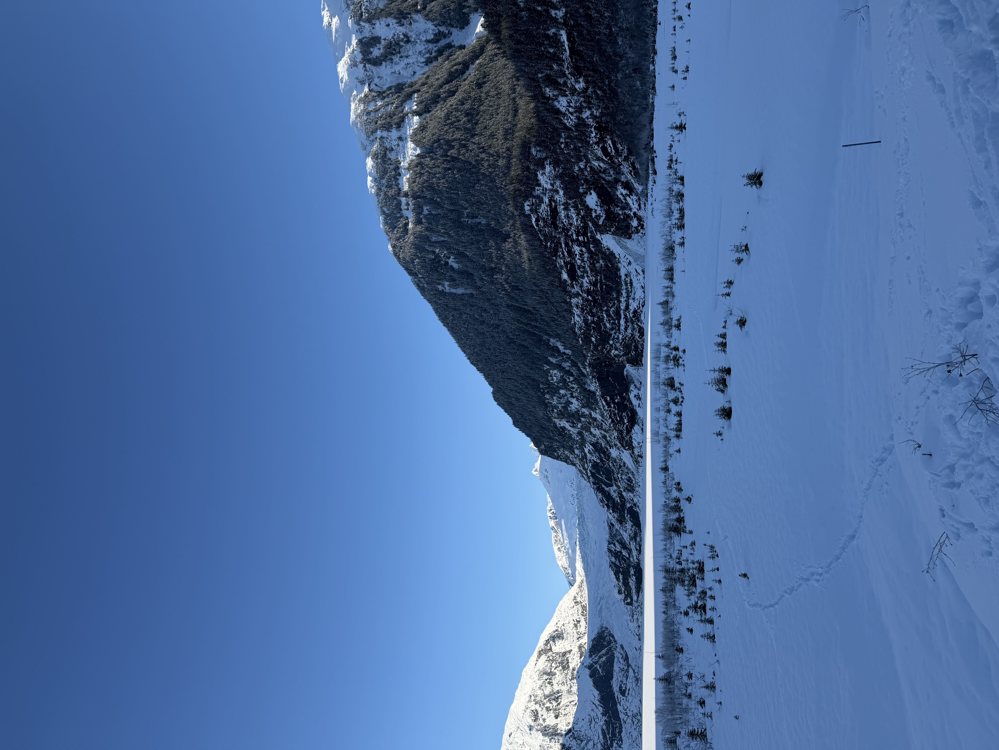

My hopes coming to Alaska were threefold. I wanted to gain a deeper understanding of Tlingit culture, practices, and the importance of these belongings — to see them not as artifacts behind glass but as living things with histories and obligations. Through that, I sought to know Alaska and its landscape, both through personal experience and through its history as the ancestral lands of Indigenous communities who have lived here for thousands of years. And finally, I sought to engage in critical conversations from the unique perspective of Princeton's intertwined relationship with this place — together with peers, experts, and friends from the University of Alaska Southeast. Over six days, I found that these three threads were never separate. Every conversation about belongings led back to the land; every encounter with the land led back to questions about who has the right to hold, to tell, to keep.

On March 8, we landed in Juneau and walked back from Mourant Hall along a path I would walk several times that week. On this first pass, I noticed a totem pole I had somehow missed on the way in. It felt like a reminder to slow down and look more carefully in this place, that things here carry meaning that does not announce itself to the casual viewer. At Whale Project Park, a whale sculpture with the Big Dipper constellation carved into its body stood with its back to the water and the mountains. Nearby, the Haida Raven totem pole by master artist TJ Young stood among several others along the trail, its figures — Raven, Butterfly, Wolf, Killer Whale, Bear, and a Supernatural Being — each representing clan crests acquired through encounters with spiritual beings.
That evening we watched Pueblo Revolt at Perseverance Theater, a production about Indigenous resistance that set the stage for the conversations about cultural survival and the refusal to disappear that would define our week.
Jerrick Hope-Lang's lecture on March 9 was an intellectual and emotional center of the trip. He traced the journey of K'alyaan's Raven Helmet from the 1804 Battle of Sitka — where his ancestor wore it defending Lingít Aaní at Shís'gi Noow — through the Russian fur trade, the Alaska Purchase, the Presbyterian boarding schools run by Sheldon Jackson, and over a century of separation, to the Sitka Tribe of Alaska's refiled NAGPRA claim in 2025. What made the lecture so powerful was that it was not only a history lesson, but also a personal story: Jerrick spoke about his mother's experience in the boarding schools. He mourned the loss of his culture openly and described the daily work of trying to get it back. With fewer than one hundred Tlingit speakers remaining, the stakes are not abstract. He described the shamanic items held at Princeton, not as curiosities or even as "art," but as belongings that carry spiritual power and are part of the community's DNA. The concept of at.óow — sacred clan property held for future generations — reframed everything I thought I knew about museum collections. Under this framework, no single person can possess these items; they belong to the clan across time.

Jerrick spoke about the objects being placed back into the Sheldon Jackson Museum under Indigenous narratives — a reframing of the museum's own space. His closing image stayed with me: a hammer, once a tool of war wielded against his people, now taken up as a way to continue onward. When he asked, "What happens when we are separated from the people?" the question was not rhetorical. You lose history when things are passed down orally and the chain is broken. Part of the healing is for the things to come back, but also figuring out how to honor and use them the way they are meant to be used when that knowledge has been disrupted. This is a question that NAGPRA alone cannot answer.

After the lecture, we went to the Native and Rural Student Center to meet with Kolene James and UAS students. This was the moment that most directly challenged how I think about identity. Students introduced themselves in Tlingit, naming their clans and the people who came before them. I had never introduced myself that way. At Princeton, we introduce ourselves through what we do: our major, our year, our extracurriculars. Here, the introduction was genealogical and relational: you are placed within a web of clan, land, and ancestors before you ever say your own name. It made me realize how much the Western-formed university, and by extension the Western-formed museum, strips away when it assigns an accession number to an object. If the Princeton University Art Museum is one system of signs and meanings, organizing belongings by date, material, and provenance, the Tlingit introduction is another system entirely, one that tells you who these items belong to, what obligations they carry, and whose voices should be centered in decisions about their care. We made tea from nettle and mint, and I saw students actively reconnecting with their culture and language. That reconnection is itself a form of repair that sits outside any legal framework.
At Auk Rec, we built a fire, walked the forest, and spotted wildlife before participating in a cold plunge. I had never done anything like it. The UAS students who guided us told us about the practice's meaning in the context of Tlingit warriors and tradition, and doing it alongside them, rather than reading about it, made the experience all the more special. That evening, Kolene and Lyle James told us a story. Only later did I understand the stipulations: in Tlingit oral tradition, stories are given to those who are listening for them, not merely listening to them. If the storyteller pauses, you must be able to tell them exactly where they stopped. You must be deserving to hear it, and you must be able to retell it exactly. In a way, it made me feel entirely more grateful that Lyle was willing to share a story. This is a system of knowledge transmission with its own rigorous standards, different from the university model of open access.

On March 10, at the Alaska State Museum's object conservation lab, we were shown beaded works from Interior and Southeast Alaska. The conservator explained crystallization — how alkaline salts released from older, unstable beads cause them to become brittle and break — as well as attachment issues and bug infestations where material had been eaten away. The guiding principle — "make it whole, make it beautiful, because that is what the ancestors would have wanted" — stuck with me. This is a philosophy of care that extends well beyond NAGPRA's legal mechanisms. I learned that to help the spirit of an object to move in the process of remaking, a transfer ceremony is needed; it is an idea that something is put to rest and something new replaces it. This practice grapples with questions NAGPRA does not: how do you honor the spiritual life of an object even as its physical form deteriorates?


In the storage room, we saw the Chilkat robe from 1948, the tunic worn at the last potlatch in Sitka in 1904, among other belongings. These items, though housed in a museum, are still frequently checked out for ceremonial use — the Chilkat, the tunic, and the frog hat are the most commonly requested. Some clans even opt to store belongings here by choice. The boundary between museum and living culture was far more porous than I had imagined from campus. Hearing UAS students describe these works and their uses reinforced that the knowledge needed to care for these items does not reside in conservation labs alone, but rather it resides in the communities they come from.

There were also objects that required deeper looking. One wooden chair appeared entirely unremarkable at first glance. It was only when I looked more carefully that I noticed the thin carves of a repeated ovoid pattern across the back. This small moment encapsulated something about the entire trip: place-based learning does not only give you new information. It teaches you how to look. In a seminar room at Princeton, I might have read about Northwest Coast ovoid forms. Here, standing in front of a chair that did not announce itself as art, I had to find them myself.


After lunch, we visited the Sealaska Heritage Institute and entered a clan house — an experience made especially meaningful by Jerrick's earlier descriptions. Emily Galgano showed us Chilkat pieces that had been welcomed home through ceremony. This was the practice that resonated with me most deeply. Unlike a simple NAGPRA repatriation, which is a legal transfer of ownership, the Sealaska welcome home ceremony awakens the spirit of the robe upon its return. Even a brittle whale Chilkat was danced. One robe had been found listed for sale online, and to the seller, it was just a blanket. When Sealaska staff explained its significance, the seller returned it. This gap between perception as an ordinary blanket, or a decorative throw but in reality being a living object with spirit, clan history, and ceremonial power, is precisely the gap that place-based learning helped me begin to close. It is also a gap that the Princeton Art Museum must contend with: these belongings may look like objects, but they are beings with spirit.

March 12, the day trip to Ketchikan, was what I found to be the most fulfilling day. At the Totem Heritage Center, we stood before some of the oldest unrestored totem poles in Alaska. The Brown Bear and Killer Whale memorial pole depicted a bear distinguished by flaring nostrils and sharp claws, with a killer whale swimming downward beneath it. The mortuary pole told the story of Stone Ribs, the Haida warrior who transformed into a sea lion to escape the Killer Whale people and return to his community. Seeing these totem poles was especially meaningful, but I learned, here, the importance of oral tradition and passing down stories to those deserving. If the elder leaves and stops, you must be able to tell them exactly where they stopped. You must be deserving to hear the story and you must be able to retell it exactly. This is not casual storytelling, and it made me reflect with gratitude that Lyle had been willing to impart an oral story.

At the Tongass Historical Museum, a cedar tree artwork made of individual salmon that illustrated the theme that "we all build each other up" captured the centrality of cedar and community to this place. I also got to try weaving and felt immediately how labor-intensive the work is and how many hours a single piece might have demanded. The Chilkat robes I had seen all week took on a different weight once I understood, even briefly, what it takes to make them. Later, on the way to lunch, we saw the Chief Johnson totem pole, one of the most photographed in Alaska, standing in downtown Ketchikan.



At Saxman, we met master carver Nathan Jackson and learned that Princeton holds his Raven and Fog Woman totem pole. Throughout the trip, the connection between Alaska and Princeton, through colonial histories, was consistently being reinforced. The most powerful moment from this day was standing in front of the Seward Shame Pole. Earlier in the semester, we had studied its three iterations: the 1880s original erected at Tongass Village to publicly shame William Seward for failing to reciprocate the potlatch and gifts given by Chief Ebbets; the 1941 CCC replica, ironically produced with federal funding; and Stephen Jackson's 2017 re-carving, which updates the portrait with pointed symbolism and explicitly resists easy reconciliation. I understood the pole intellectually as a countermonument — a work that keeps colonial debts visible in public memory, challenging celebratory monument-making around the Alaska Purchase. But seeing it in person, with the painted clan house behind it and the forest surrounding it, made the argument physical in a way no reading could. The Seward figure at the top, with his ringed hat marking the number of potlatches where debts haven't been reconciled, was the key moment of the importance of place-based learning.

On our final day, Jason Fellman led us to Mendenhall Glacier, where the retreat of the ice over just a few decades was starkly visible. I was glad the trip included this environmental element — a reminder that the land itself is changing, and that any conversation about stewardship of culture must also be a conversation about stewardship of place. That afternoon, we screened Wayne Price's film about leading youth in building a dugout canoe. Watching the young people learn the craft and then take the canoe out on the water was deeply moving. The film carried broader implications about sobriety, about how cultural reconnection can heal damage that colonialism inflicted not just on objects but on people. Even the master carver had needed to learn by making mistakes, because the chain of direct transmission had been broken. Price has also carved several healing totems. The process of cultural craft — carving, weaving, speaking the language, telling the stories — emerged not as a product of healing but as the healing itself.
The closing panel, with Jerrick, Lyle, Wayne, and Kolene, felt like the culmination of everything we had experienced. There was a discussion about form and media that I found particularly compelling: Price's film used cameras and editing to preserve a culture rooted in oral tradition. Is that a contradiction? The panelists did not think so. If the culture is meant to be spread and kept alive, adaptation is not betrayal, but a form of survival. I also particularly enjoyed hearing what Kolene is doing with her work directly with students at UAS, and the ways that cultural reconnection happens not through grand gestures but through daily practice.
Before this trip, I thought of the Sheldon Jackson collection primarily as a question of repatriation policy, NAGPRA timelines, and institutional negotiation. I still think those legal frameworks matter. But I now understand that the work extends far beyond them. The welcome home ceremony at Sealaska, the transfer ceremony in the conservation lab, the oral tradition protocols, the cold plunge with UAS students, and the introductions in Tlingit are practices of healing, repair, and reparation that sit adjacent to NAGPRA, and in many ways go deeper. NAGPRA provides a mechanism for return. These practices ask what it means to return something when the knowledge of how to use it has been disrupted; what it means to hold something when you do not know the full weight of what it carries. If the Princeton Art Museum is one system that privileges written labels, glass cases, and climate-controlled storage, the trip revealed other systems entirely: the clan introduction that places an object within a living genealogy; the ceremony that awakens a robe's spirit; the oral tradition that guards knowledge through discipline rather than open access; the conservation ethic that asks not just how to preserve an object but how to honor the intention behind it. These are not supplementary perspectives to footnote alongside the museum's, and should be treated as the primary frameworks through which these belongings have meaning. Any model of stewardship that does not center them is incomplete.
I came to Alaska hoping to understand Tlingit culture, to know this landscape, and to have conversations that Princeton alone could not offer. I learned to listen for, instead of listen to, and built relationships with the people, belongings, and land of Alaska. Thank you for this meaningful trip. I will remember it for a long time.